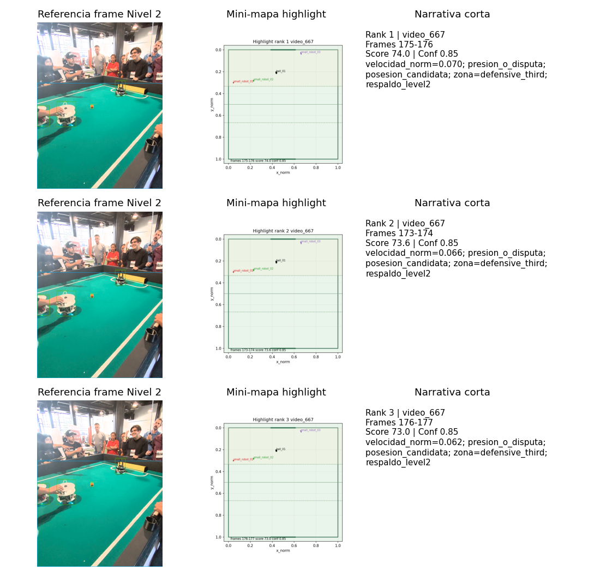
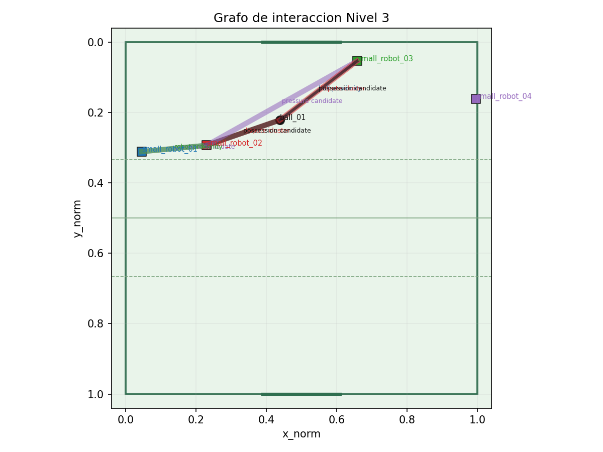
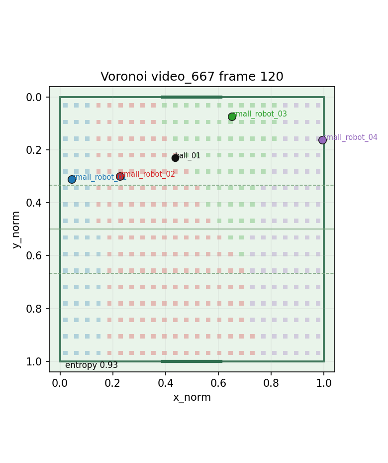
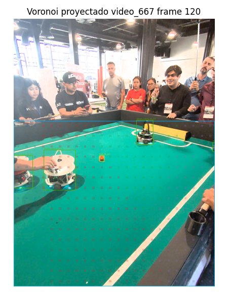

FutBotMX Nivel 3
Dashboard tactico avanzado
Estado: generado
Regla: level3_dashboard_v0.1
Clips: video_667
- Score top74.0highlight provisional rank 1
- Highlights60ranking completo
- Metricas17CSV Nivel 3
- Interacciones428muestras tacticas
- Aristas8grafo agregado
- Cadenas1pases conservadores
Metricas por clip
Comparacion normalizada sobre tracks rectificados y grilla de control espacial.
| Clip | Frames | Entropia control | Interacciones | Aristas | Confianza |
|---|---|---|---|---|---|
| video_667 | 61 | 0.923 | 428 | 8 | 0.67 |
Control por robot
Fallback por robot individual cuando no hay equipo confiable.
| Clip | Robot | Control medio | Zona dominante | Confianza |
|---|---|---|---|---|
| video_667 | small_robot_bt_02 | 47.0% | attacking_third | 0.91 |
| video_667 | small_robot_bt_03 | 36.8% | defensive_third | 0.93 |
| video_667 | small_robot_bt_04 | 24.5% | middle_third | 0.59 |
| video_667 | small_robot_bt_01 | 15.8% | middle_third | 0.90 |
Visualizaciones
Assets ligeros versionados desde la Actividad 5.
{kind=link}

{kind=link}

{kind=link}

{kind=link}

Highlights
advanced_highlight: 60, pass_chain: 1 | dudoso: 1, provisional: 60
| Rank | Clip | Frames | Score | Conf. | Motivo |
|---|---|---|---|---|---|
| 1 | video_667 | 175-176 | 74.0 | 0.85 | velocidad_norm=0.070; presion_o_disputa; posesion_candidata; zona=defensive_third; respaldo_level2 |
| 2 | video_667 | 173-174 | 73.6 | 0.85 | velocidad_norm=0.066; presion_o_disputa; posesion_candidata; zona=defensive_third; respaldo_level2 |
| 3 | video_667 | 176-177 | 73.0 | 0.85 | velocidad_norm=0.062; presion_o_disputa; posesion_candidata; zona=defensive_third; respaldo_level2 |
| 4 | video_667 | 163-164 | 72.9 | 0.86 | velocidad_norm=0.060; presion_o_disputa; posesion_candidata; zona=defensive_third; respaldo_level2 |
| 5 | video_667 | 169-170 | 72.7 | 0.86 | velocidad_norm=0.059; presion_o_disputa; posesion_candidata; zona=defensive_third; respaldo_level2 |
| 6 | video_667 | 167-168 | 72.6 | 0.86 | velocidad_norm=0.057; presion_o_disputa; posesion_candidata; zona=defensive_third; respaldo_level2 |
Aristas principales
Interacciones agregadas con ponderacion por duracion, distancia y confianza.
| Clip | Conexion | Tipo | Frames | Dist. | Peso | Conf. |
|---|---|---|---|---|---|---|
| video_667 | small_robot_bt_01 -> small_robot_bt_02 | robot_proximity | 61 | 0.186 | 34.4 | 0.67 |
| video_667 | small_robot_bt_01 -> small_robot_bt_02 | pressure_candidate | 61 | 0.186 | 33.8 | 0.66 |
| video_667 | small_robot_bt_02 -> ball_bt_01 | dispute_cluster | 61 | 0.220 | 33.2 | 0.66 |
| video_667 | small_robot_bt_02 -> ball_bt_01 | possession_candidate | 61 | 0.220 | 32.7 | 0.65 |
| video_667 | small_robot_bt_02 -> small_robot_bt_03 | pressure_candidate | 61 | 0.277 | 31.8 | 0.66 |
Evidencia
Links relativos a CSV, JSON, Markdown y manifests usados para construir esta vista.
| Fuente | Ruta | Estado |
|---|---|---|
| metrics_csv | ../tactical_metrics/level3_metrics.csv | versionado |
| metrics_json | ../tactical_metrics/level3_metrics.json | versionado |
| interaction_edges_csv | ../tactical_metrics/interaction_edges.csv | versionado |
| highlights_csv | ../advanced_events/level3_highlights.csv | versionado |
| events_json | ../advanced_events/level3_events.json | versionado |
| narrative_md | ../advanced_events/level3_narrative.md | versionado |
| visualization_manifest_csv | ../visualizations/visualization_manifest.csv | versionado |